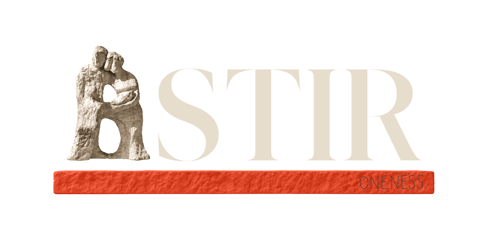
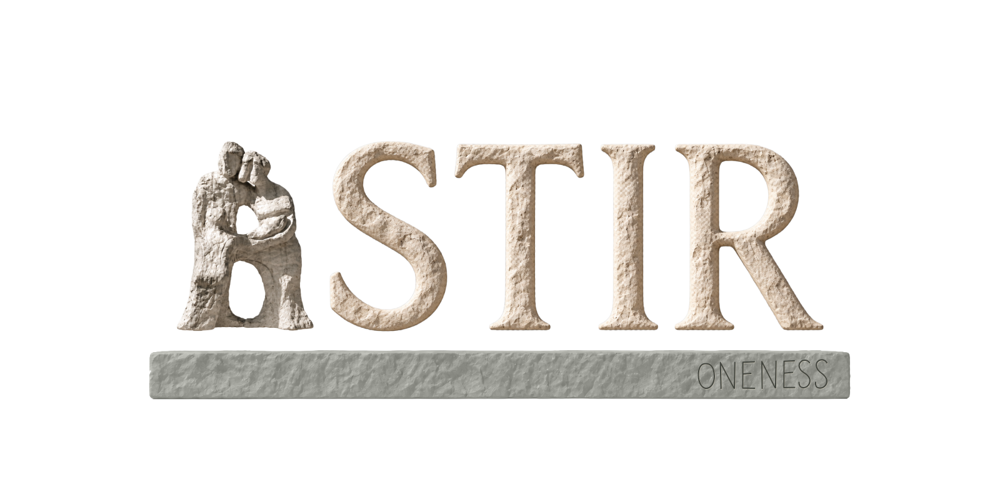

LATEST / ROUND 08 / DIRECTIONS 54–55

Warm editorial ↗
The exact flat serif and spacing from 46, paired with the original or warmed statue 36. Fixed tall A, signal and oxide foundations, and 15 black app-icon/social configurations.
ASTIR / SAVED IDENTITY STUDIES
Three preserved rounds of the Astir identity exploration. Open any review locally; no server or account is needed. These are design studies, not changes to the running app.
LATEST / ROUND 08 / DIRECTIONS 54–55

The exact flat serif and spacing from 46, paired with the original or warmed statue 36. Fixed tall A, signal and oxide foundations, and 15 black app-icon/social configurations.
PRESERVED / ROUND 07 / DIRECTIONS 46–53

Eight lettering directions, equal-height and taller A, monochrome/signal/oxide foundations, ink and light iPhone splashes, black app icons, and Instagram/TikTok profile exports.
PRESERVED / ROUND 06 / DIRECTIONS 42–45

The earlier current-serif stone wordmarks, continuous foundation, splash studies, and app icons. All round 06 files remain unchanged.
This repository copy contains rounds 06–08. Rounds 01–05 remain in the complete original exploration archive.